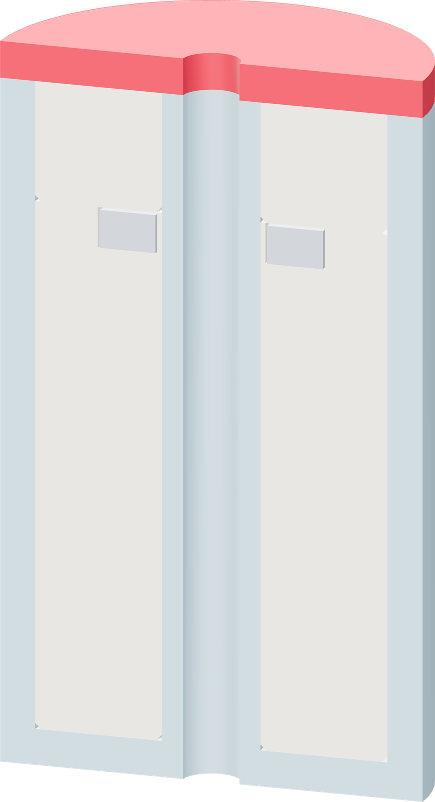

Close the door and resume
The remaining 17 PETG layers make the 3.06 mm roof and enclose the complete assembly.

- Remove your hands and the scraper from the printer.
- Close the enclosure and press Resume. Let the printer restore its nozzle temperature and finish the roof.
- Leave the float on the sheet until the bed reaches 35 °C or below.
One continuous shell
The final roof is part of the PETG print. There is no separate lid to glue on and no adhesive cure after printing.